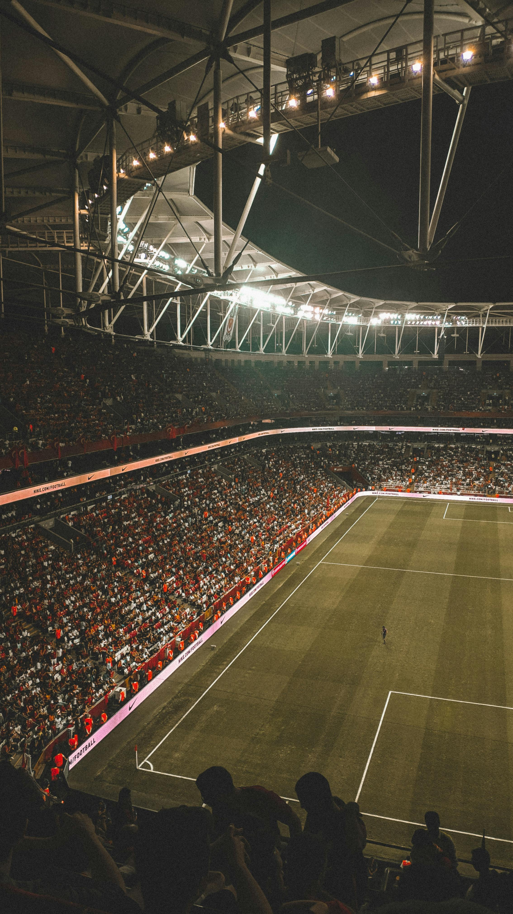
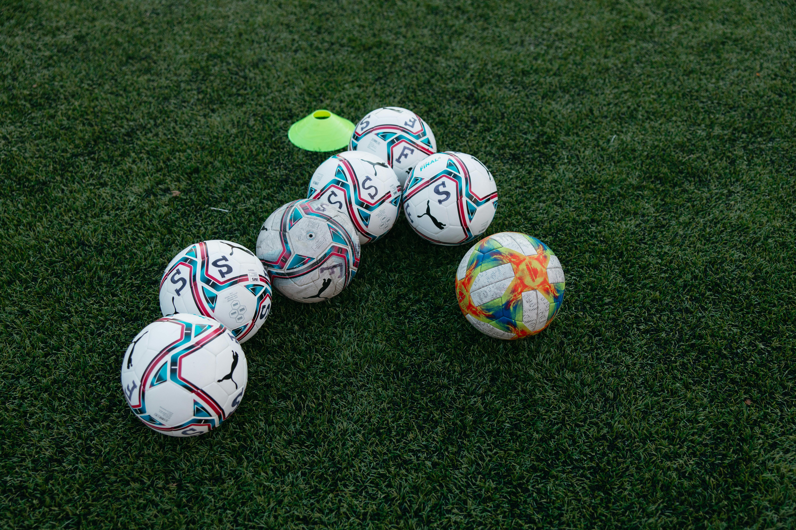
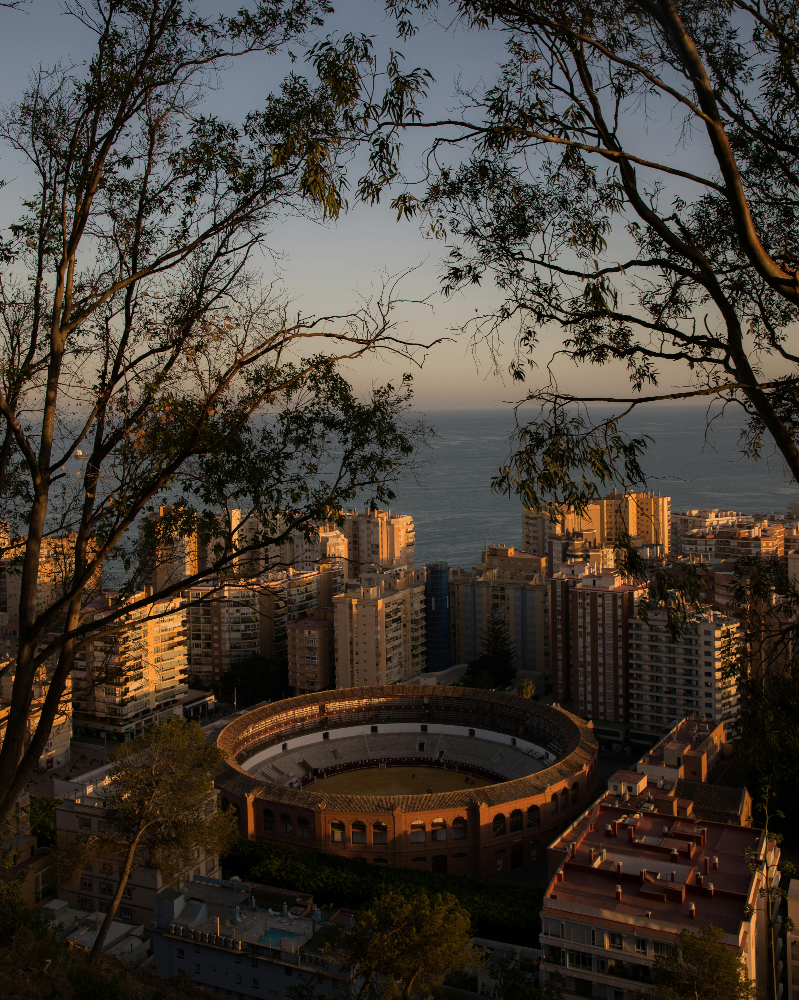
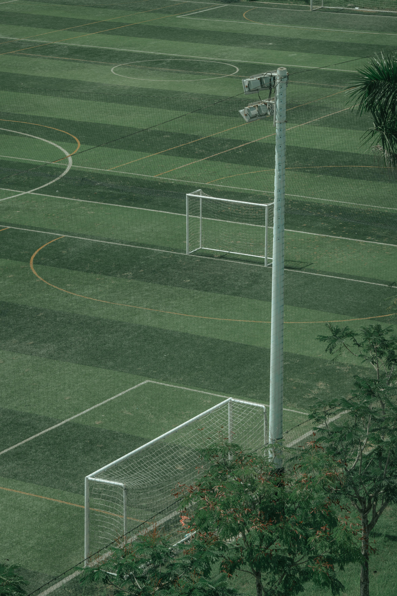
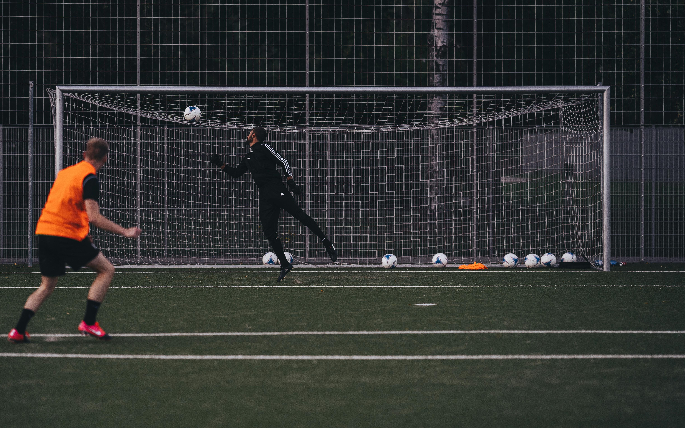
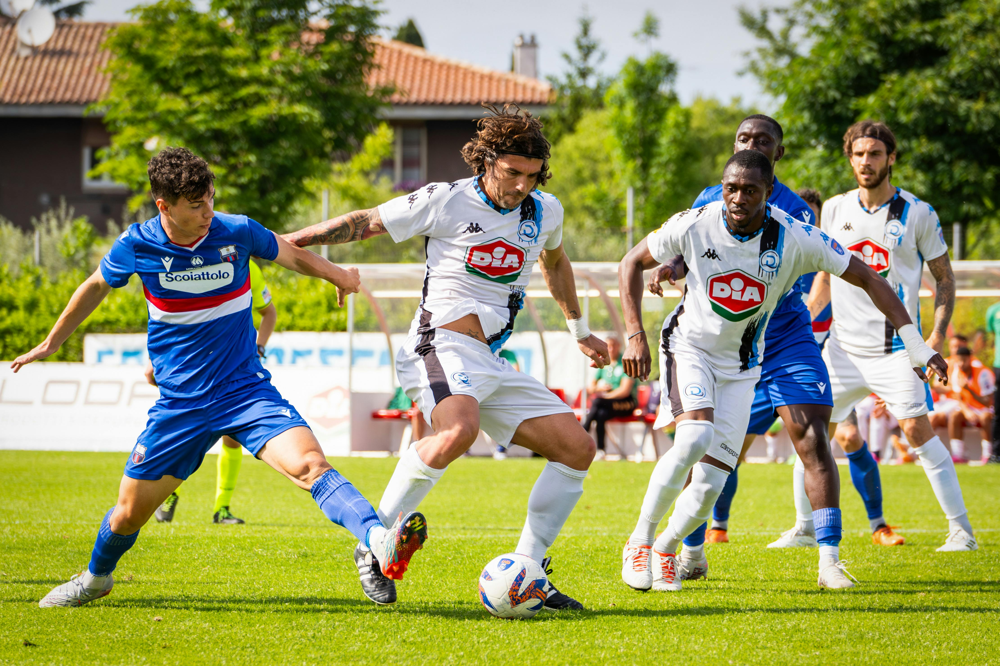

Who
Soccer, or football as it’s known outside North America, is a sport with a vast and inclusive following. It’s played by millions around the globe, from amateur neighborhood teams to high-profile international leagues and tournaments. The game is enjoyed by people of all ages and skill levels, which has helped make it one of the world’s most beloved sports. Soccer legends like Pelé, Diego Maradona, and Lionel Messi have turned soccer into more than just a sport; they’ve inspired entire cultures and generations with their talent, dedication, and love for the game.
The game’s simplicity makes it accessible to virtually anyone, anywhere. A ball and an open space are all you need to start playing, making it easy for people from all walks of life to join in. Communities come together around soccer, forming local teams and fan groups, with the sport serving as a common language that unites people across social and economic backgrounds. This sense of community and passion has led soccer to become a key part of the identity for countries and fans worldwide.

Samsun 19 Mayıs Stadium in Turkey
What
Soccer is a team sport played between two teams of eleven players on a rectangular field with a goal at each end. The objective of the game is simple yet thrilling: to score more goals than the opposing team by advancing the ball into their net. Each game is divided into two halves, typically lasting 45 minutes each, with a short halftime break. While the rules may be straightforward, soccer requires a high level of teamwork, strategy, and individual skill, creating a captivating experience for players and spectators alike.
The beauty of soccer lies in its blend of simplicity and complexity. While the basic rules are easy to grasp, there’s immense room for strategic depth. Teams work on positioning, passing, and attacking sequences to break down defenses, while defenders craft tactics to protect their goal. The unique balance of physicality and skill creates a dynamic and exciting game, where quick reflexes, mental resilience, and tactical foresight play essential roles. This duality of simplicity and sophistication is what makes soccer so widely appreciated around the world.

A Soccer ball
When
Soccer as we know it today began to take shape in England during the mid-19th century, with the establishment of standardized rules and the formation of organized leagues. The Football Association (FA) was founded in 1863, and soon after, clubs across the country began competing in formal competitions. However, the roots of soccer stretch back even further, with ancient civilizations like those in China, Greece, and Rome playing similar ball games that influenced the modern sport’s development.
The popularity of soccer grew rapidly, spreading first through Europe and then globally, eventually leading to the establishment of the Fédération Internationale de Football Association (FIFA) in 1904. In 1930, Uruguay hosted the first FIFA World Cup, an event that brought together teams from around the world and established soccer as an international sport. Since then, the World Cup has become the most-watched sporting event worldwide, capturing the hearts of billions of fans every four years and fostering a global appreciation for the game.

Malagueta Staduim in Malaga, Spain
Where
Soccer is played in nearly every corner of the world, from local parks and streets to grand stadiums that hold tens of thousands of fans. Iconic venues like Camp Nou in Spain, Old Trafford in England, and Maracanã Stadium in Brazil are cherished landmarks where historic matches have unfolded, and generations of fans gather to support their teams. These stadiums are often symbols of local pride and serve as venues for unforgettable events, creating memories that fans carry with them for life.
At the grassroots level, soccer is played on school grounds, in backyards, and in public parks, making it one of the most accessible sports. For many young fans, a dirt field and a makeshift goal are enough to foster a lifelong passion for the game. Soccer transcends geography, social status, and language, uniting fans and players across cultures. It’s a sport that truly belongs to the world, thriving in places both large and small, rural and urban, creating a universal bond among its followers.

An Artifical Grass Soccer Field
Why
Soccer’s appeal lies in its simplicity and the sense of unity it brings. It’s a game where one goal can shift the energy of a stadium, and where teamwork and perseverance are essential to success. People from all walks of life come together to support their teams, and the passion for soccer extends beyond the field, becoming a part of the culture and identity of communities worldwide. Whether at the local level or on the international stage, soccer creates a sense of pride, belonging, and excitement that few other sports can match.
Beyond the excitement, soccer fosters a deep sense of connection. Fans celebrate victories and mourn defeats together, building friendships and memories along the way. The World Cup, for instance, isn’t just a tournament but a global celebration of humanity, diversity, and sportsmanship. The game’s accessibility and inclusivity allow it to cross borders and bridge differences, reminding us of our shared human experience. Soccer isn’t just a game; it’s a powerful force that brings people together, inspiring joy, hope, and community.

A player shoots a soccer ball
How
A soccer match begins with a kickoff from the center of the field, and the game flows as players pass, dribble, and attempt to score by getting the ball into the opponent’s net. Players can use any part of their body except their hands and arms to control the ball, with goalkeepers as the only exception within their penalty area. Teams employ tactics and strategies, balancing defense with attacks, to control possession and create goal-scoring opportunities. A typical game consists of two 45-minute halves, and the team with the most goals at the end wins.
The strategic depth of soccer is what makes it so exciting. Coaches and players work on formations and plays, honing their movements and skills to outmaneuver the opposition. Defense requires as much precision as offense, as players block, tackle, and intercept to keep opponents from scoring. Set pieces like corner kicks, free kicks, and penalty kicks add drama and require careful planning. The dynamic nature of soccer, combined with its unpredictability, is what keeps fans and players captivated throughout each match.

A Game of Soccer
AI Prompts
- How to select every element but the first child of its parent
- Give me the code to make a website display a div when a button is clicked
- I have a simple HTML page that has a section in the body tag with five articles (they have no ids or classes). There are 5 buttons above this section with names that make the h2 in the articles. I want when a button is clicked that the article that is displayed in the section changes
- Generate text for my website about soccer for the who, what, when, where, why, how